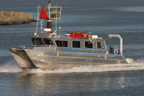
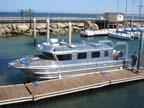

|
The R/V VenTresca is a custom built, shallow draft, 35 ft. aluminum hydrographic survey catamaran. Same state-of-the-art sonar mapping and ROV technology found on
large hydrographic research vessels, but here in a towable configuration
designed for near shore shallow water habitat work.
|  |
|
 |
|
Fisheries biologist
Dave VenTresca
and his namesake vessel |
Make & Model: Armstrong Marine custom manufactured
catamaran
Length: 35 ft
Draft: 2 ft
Beam: 10'6''
Engines: Twin Yamaha 350hp four-stroke outboards that meet EPA emission standards for 2006.
Electronics: PC-based Nobeltec/Sitex navigation includes
fully integrated GPS, digital charting, radar and autopilot.
Safety & radio equipment: EPIRB, liferaft, flares, UHF
radio, submersible GPS and UHF radios.
Pilot House:
15' welded aluminum cabin with 6'2" headroom
Dual mathers Micro Commander electronic controls
Toilet compartment
30 gallon holding tank (w Y valve, fittings, and pump out)
Dinette seating/table, Galley package
Hella 40 series navigation lights
6 dual 110VAC outlets
Hydraulics:
Honda 9 HP Hydraulic pump, 8 gpm w tank & filter
Kinematic 12x6 Anchor winch
Kinematic 12x14 SVP retrieval winch w high speed mounted motor
Galvanized hand winch and open snatch block for removable davits
Seafloor
Mapping:
Reson 7125 & Reson 7111 multibeam bathymetry and sidescan sonar
EdgeTech 260 sidescan sonar
Hyball ROV
ORE Trackpoint II+ acoustic underwater positioning and navigation
Triton Imaging, Inc ISIS sonar acquisition system with realtime DTM generation
and sidescan mosaicking capability
Hypack hydrographic survey software
Trimble 4700 GPS (RTK and DGPS capable)
PONAR sediment grab
SCUBA platform
Dive door center stern
|


{kind=link}
{kind=link}
{kind=link}
{kind=link}
{kind=link}